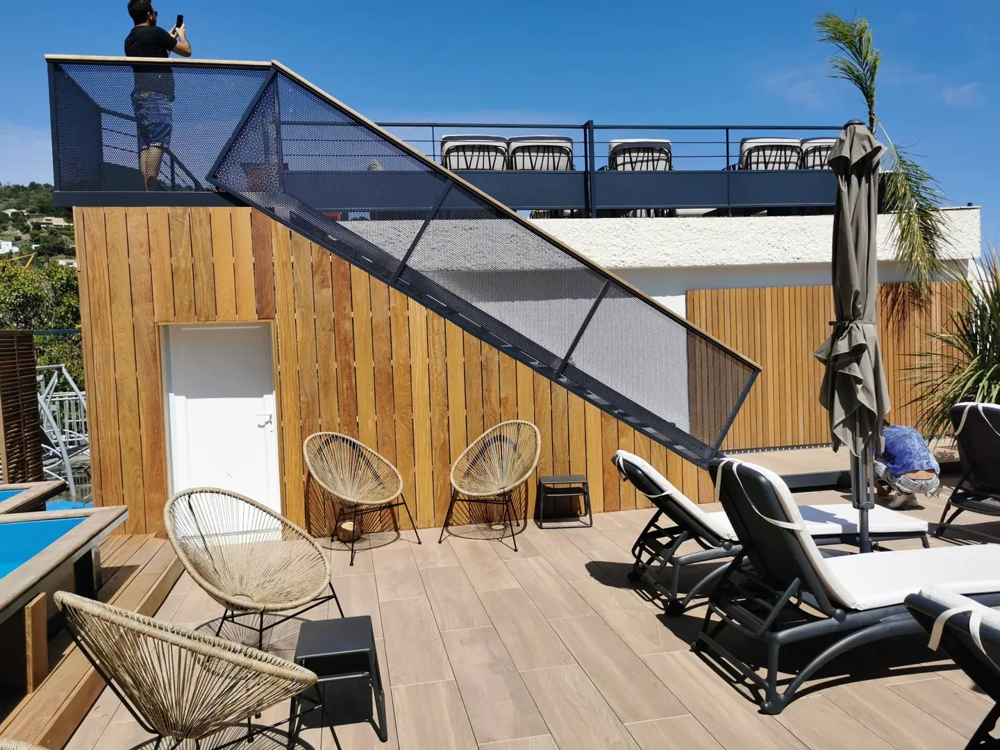
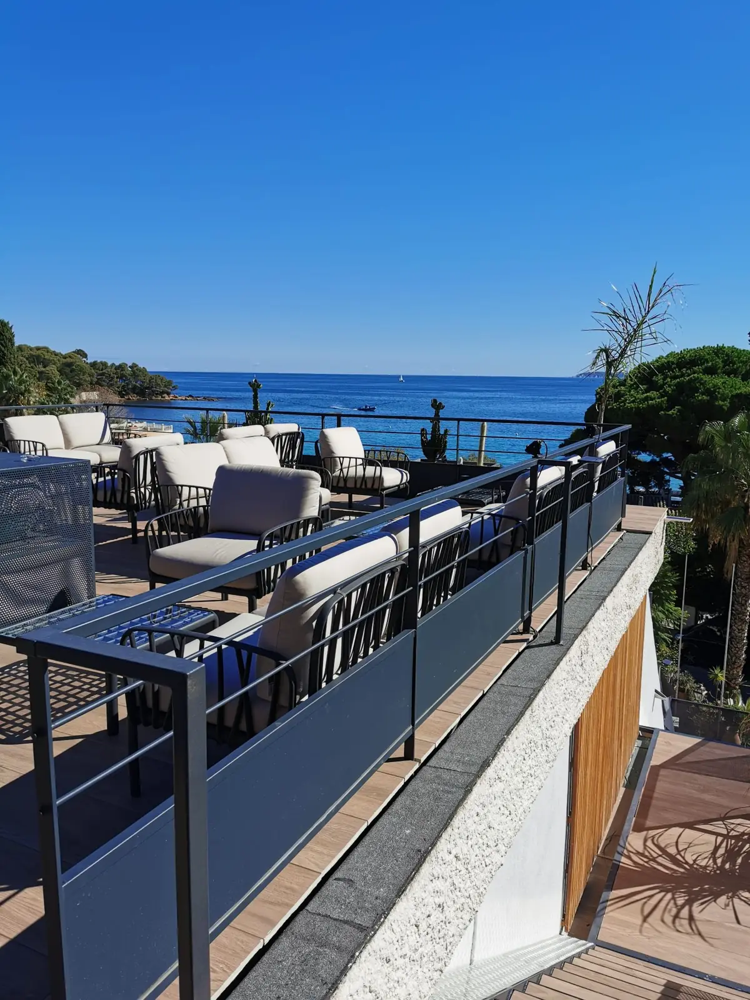
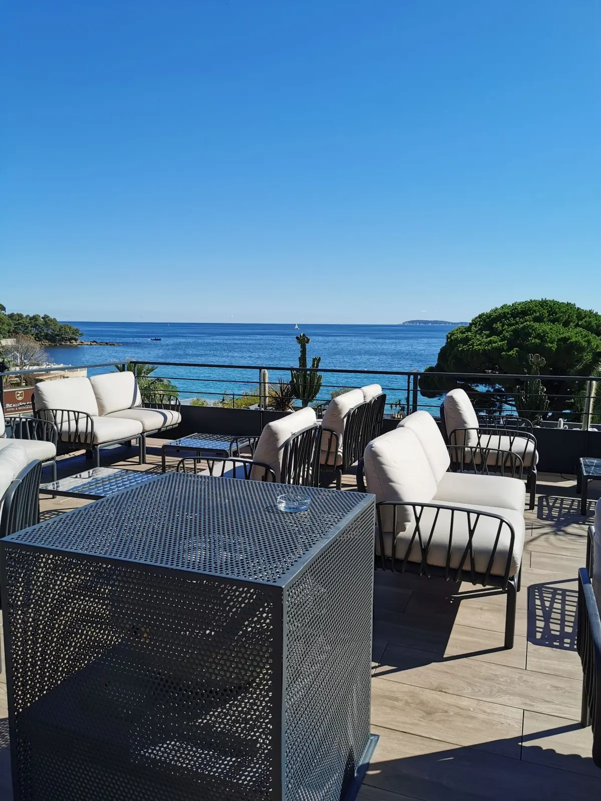
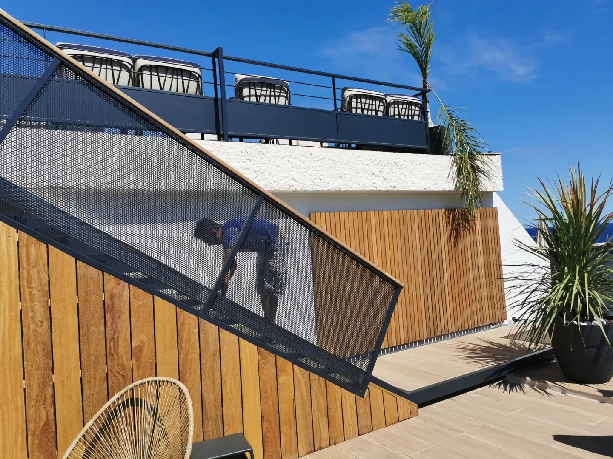

Retour sur une réalisation qui compte parmi nos références dans l'hôtellerie varoise. En 2021, l'hôtel Les Alcyons, établissement 4 étoiles situé à Aiguebelle, sur la commune du Lavandou, a engagé l'aménagement complet de son toit-terrasse pour en faire un rooftop vue mer : salon extérieur, solarium et transats, à quelques mètres de la plage. FMG Metal Studio a pris en charge l'ensemble de la métallerie de ce nouvel espace.
Une métallerie entièrement fabriquée dans notre atelier
Chaque ouvrage a été dessiné pour ce rooftop, à partir des relevés réalisés sur place, puis fabriqué dans notre atelier avant d'être livré et posé au Lavandou :
- Les garde-corps du toit-terrasse : des poteaux et lisses en acier associés à une partie basse pleine, qui sécurisent le pourtour du rooftop tout en laissant la vue sur la mer dégagée.
- L'escalier d'accès : un escalier droit en acier dont les garde-corps en tôle perforée, posés en biais le long de la volée, en font un élément graphique de la terrasse, en dialogue avec le bardage bois.
- Les rampes qui accompagnent les circulations entre les différents niveaux de la terrasse.
L'ensemble est traité dans une même teinte anthracite, qui s'accorde au mobilier extérieur et souligne les lignes de l'architecture sans jamais concurrencer le panorama.

Les exigences d'un établissement hôtelier en bord de mer
Un rooftop d'hôtel accueille du public tous les jours de la saison : les garde-corps et l'escalier doivent répondre aux exigences de sécurité d'un établissement recevant du public, avec la solidité nécessaire à un usage intensif. À quelques mètres de la mer, l'acier doit aussi résister à l'air salin et au plein soleil, d'où l'importance d'une protection et d'une finition adaptées. Le chantier, enfin, devait s'intégrer au calendrier de l'hôtel et à l'intervention des autres corps d'état, sur un toit-terrasse où chaque élément est acheminé et posé avec précision.


- Ouvrages
- Garde-corps, escalier, rampes
- Matériaux
- Acier, tôle perforée
- Finition
- Teinte anthracite
- Fabrication
- Sur mesure, dans notre atelier
- Client
- Hôtel Les Alcyons 4 étoiles
- Lieu
- Aiguebelle, Le Lavandou (83)
- Année
- 2021
Métallier dans le Var : garde-corps, escaliers et menuiserie acier sur mesure
Basé à Nîmes, FMG Metal Studio intervient régulièrement dans le Var : au Lavandou, mais aussi à Saint-Tropez, La Croix-Valmer ou Roquebrune-sur-Argens, et plus largement sur toute la Côte d'Azur. Hôtels, restaurants, résidences secondaires et villas : nous concevons et fabriquons dans notre atelier des garde-corps, escaliers, pergolas et menuiseries acier Pleine Lumière® pensés pour le climat méditerranéen et l'exposition au bord de mer.
Vous préparez l'aménagement d'un rooftop, d'une terrasse ou d'un établissement dans le Var ? Découvrez nos réalisations ou parlons de votre projet.
